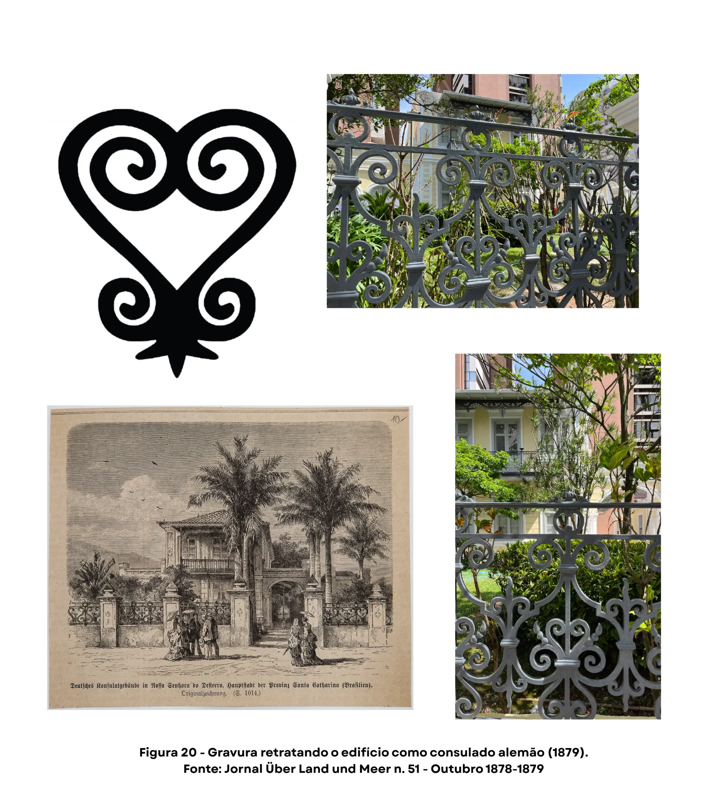

Casa do Barão · Pavimento superior · Sala 3
Entre o antigo e o novo
do tombamento ao Centro Cultural do Ministério Público de Santa Catarina
Tombadas em 1986 pelo Decreto Municipal n. 270/86, a Casa do Barão e a Casa Bocaiuva tiveram protegidas fachadas, cobertura e volumetria.
Nas décadas seguintes, o casarão integrou um centro empresarial e chegou a abrigar uma agência bancária. Adquirido pelo MPSC em 2022, o imóvel passou por obra concluída em 2026, que o converteu em espaço público de cultura.
A Casa Bocaiuva, adquirida em 2013, foi restaurada e entregue em 2018.
Um lugar de encontro permanente com a cultura e a cidadania.
Percurso da exposição
Casa do Barão: do tombamento ao Centro Cultural · Casa Bocaiuva: espaço de cultura aberto à cidade · Nunca é tarde para voltar e apanhar aquilo que ficou para trás
Preservação
Casa do Barão: do tombamento ao Centro Cultural
O ano de 1986 é um marco para a preservação da Casa do Barão e da Casa Bocaiuva. Em dezembro, são tombadas pelo Decreto Municipal n. 270/86, integrando o Conjunto Arquitetônico Praia de Fora. O tombamento, no entanto, restringiu-se às fachadas, à cobertura e à volumetria, permitindo alterações internas.
No que concerne à Casa do Barão, após inúmeras possibilidades, foi vendida para fazer parte de um novo complexo, o Centro Executivo Casa do Barão. O projeto, aprovado em 1989, integrou e recuperou a casa principal, o anexo e o jardim histórico.
Posteriormente, o conjunto foi alugado para a instalação de uma agência do Banco Itaú. Com o interior liberado para adaptações, o banco passou a usar o pavimento térreo da casa principal para atendimento ao público e a edificação anexa para a área de funcionários.
Ao longo das décadas, foram retirados os pisos de madeira e instalados pisos cerâmicos, trocados forros, e diversos outros itens que garantiram o funcionamento da agência, mas que encobriram ou alteraram parte dos ambientes internos originais.
A trajetória da Casa após o tombamento revela uma tensão produtiva entre preservação e uso. Se, por um lado, a ocupação pelo Banco Itaú ajudou a manter o casarão vivo e conservado, justificando a necessidade de conservação contínua, por outro, as adaptações acumuladas introduziram elementos que demandaram revisão e, em alguns casos, reversão.
Em 2022, o imóvel foi adquirido pelo Ministério Público de Santa Catarina. Após ser utilizado por áreas administrativas, a Casa do Barão iniciou um novo capítulo: a implantação do Centro Cultural do MPSC, com obra concluída em 2026.
Este projeto mantém viva sua importância para a memória da cidade e garante que a Casa permaneça legível e significativa para as futuras gerações.
A casa vizinha
Casa Bocaiuva: espaço de cultura aberto à cidade
Construção luso-brasileira de meados do século XIX, tombada em 1986 com a Casa do Barão. Adquirida pelo MPSC em 2013, foi restaurada e entregue em 2018.
“Com a preservação de nossa casa poderemos deixar aos nossos familiares, que também por aqui passaram, uma lembrança muito viva de nossa família, e ao município, uma contribuição da gente que sente um grande amor por sua terra.”

Planta baixa com as prováveis ampliações e alterações. Em vermelho, a área mais significativa: a planta original da residência luso-brasileira.
Nunca é tarde para voltar e apanhar aquilo que ficou para trás
Gradil da Casa do Barão: entre narrativas europeias e africanas
Merece destaque o gradil do muro fronteiro à construção, já presente, inclusive, na gravura datada de 1879, período em que a escravidão ainda era legalizada. De acordo com o documento elaborado pelo IPUF, intitulado Justificativa Histórica, artística e natural para Tombamento da Rua Bocaiuva, afirma-se que o gradil e os caramanchões do muro fronteiro à construção são provenientes da Europa. Na mesma toada, Eliane Veiga afirma que “muros gradeados e gazebos em ferro, produzidos na Europa, contornam as esquinas e chamam a atenção até os dias de hoje” (Veiga, 2019, p. 169).
Contudo, a origem europeia dessas grades não é um fato histórico dado. Não há fontes documentais primárias e incontestáveis ou registros materiais que sustentem definitivamente essa afirmação. A atribuição de autoria e proveniência ao continente europeu costuma operar, muitas vezes, como parte da narrativa histórica hegemônica, silenciando outras possibilidades de produção e leitura. Independentemente de a peça ter sido encomendada no exterior ou produzida em solo nacional, o desenho delineado no metal não é algo incomum nos lares brasileiros: na verdade, facilmente encontramos esses mesmos símbolos compondo portões, grades e janelas de ferro de forma disseminada. Como explicado pelo Museu das Minas e do Metal, de Belo Horizonte, muitas vezes este formato é relacionado ao de um ideograma africano chamado Sankofa, originário dos povos Akan e que pertence a um conjunto de símbolos chamado Adinkra. O museu ainda enfatiza a tradição ferreira africana como uma das precursoras no manuseio metalúrgico em solo brasileiro.
O ideograma Sankofa, além da forma geométrica com volutas espelhadas como aparece no muro da Casa do Barão, também costuma ser representado por um pássaro com a cabeça voltada para trás. De acordo com a socióloga Elisa Larkin Nascimento (2008, p. 32), o significado do Sankofa pode ser traduzido ao português como “nunca é tarde para voltar e apanhar aquilo que ficou para trás”.
Com isso, a análise da grade a partir do Sankofa transcende a necessidade de atestar o seu local exato de fabricação. Independentemente de a peça ter sido importada da Europa ou produzida por mãos escravizadas no Brasil, não podemos descartar a possibilidade da qual o seu padrão estético remete a conhecimentos e a formas de fazer que, costumeiramente no Brasil, possuem um referencial da cultura africana.

Gravura retratando o edifício como consulado alemão (1879). Fonte: jornal Über Land und Meer, n. 51, outubro de 1878-1879.